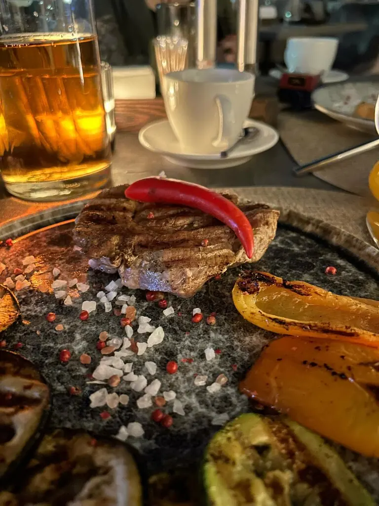
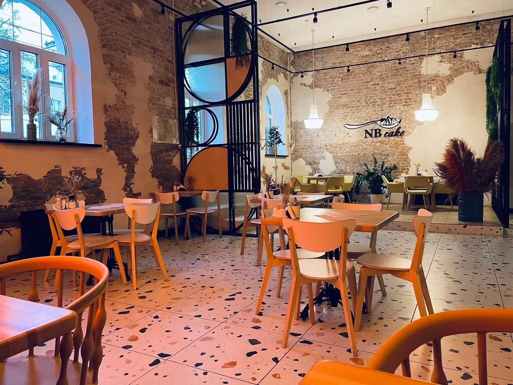

Курск+7 996 944-46-46
Альт
Проведите по струнам: они настоящие. Вечером здесь бывают гитарники и квартирники, а на столе шипит сковорода.
4,9 · 160 оценок
Шипит и звучит
Шипящая сковорода с курицей780 ₽
Шипящая сковорода со свининой780 ₽
Спагетти карбонара580 ₽
Пенне с морепродуктами760 ₽
Тартар из лосося в чаше из авокадо980 ₽
Вителло тоннато990 ₽
Часть меню с Яндекс Карт, цены уточняйте у официанта.


Квартирник
Вечерняя гитара, можно подпевать. Диваны, кальян, спортивные трансляции и бизнес-ланч в будни.
На бис
Очень нравятся гитарники с Александром Измайловым. Кухня вкусная, атмосфера располагает к хорошему выходному вечеру.Евгения Сластина
Атмосферное место. Можно вкусно поесть, посидеть с кальяном, квартирники отдельная любовь, очень душевно.Кристина Дмитриева
Нам было очень вкусно! Фирменный салат с баклажанами просто прелестный.Анна М.